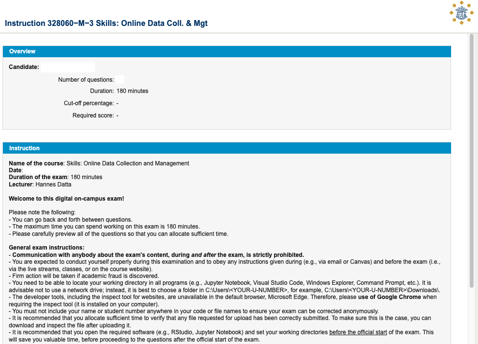
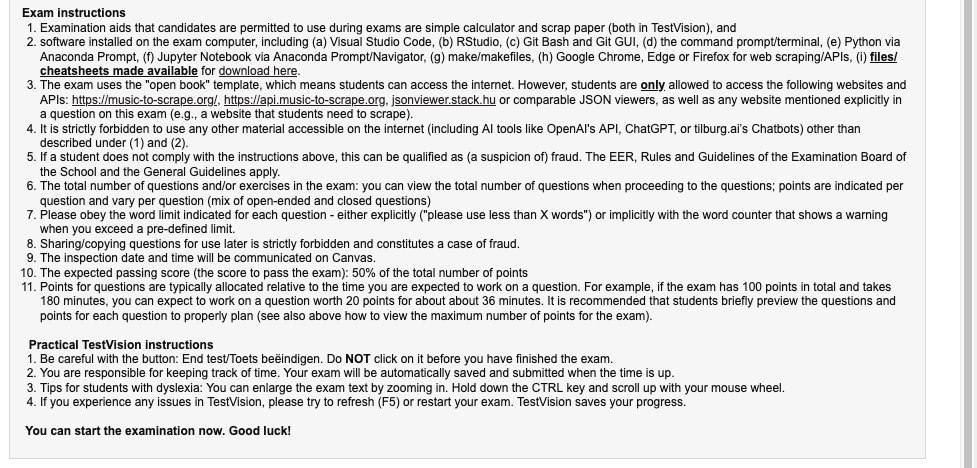
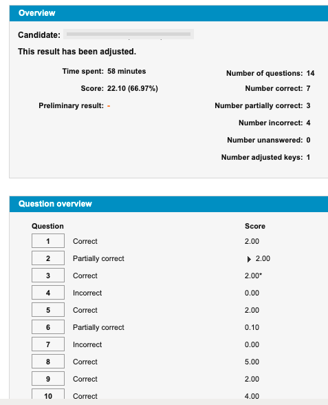
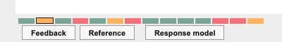

Exam preparation
Online Data Collection & Management (328060-M-6)
- Please note that this is the first draft for the example questions; updates may be posted on Canvas.
- Updated will always accompanied by Canvas Announcements.
Introduction
- The exam consists of open and closed (multiple-choice, ranking, matching) questions, structured along the learning goals of this course.
- Cognitive skills that will be tested are knowledge, comprehension, analysis, application, synthesis and evaluation.
- You can expect to work two hours on the exam.
- Material covered: all readings, lectures (& recordings), tutorials (Jupypter Notebooks, recordings, slides) and code snippets posted to Canvas.
Overview of Questions
The table below outlines the types of questions you can expect, along with their sources for each learning goal of the course.
| No. | Learning goal | Evaluation Level | Question Type | Points |
|---|---|---|---|---|
| 1 | Explain use of web data in academic literature | Comprehension | MC | 12 |
| 2 | Select web data sources and evaluate academic/business value | Knowledge & Eval. | MC & Open | 24 |
| 3 | Design web data collection balancing validity, technical feasibility and legal/ethical risks | Analysis | MC & Open | 24 |
| 4 | Collect data via web scraping and APIs | Applic. & Synthesis | Coding | 48 |
| 5 | Document and archive collected data for public (re)use | Knowledge | MC | 12 |
| Total | 120 |
Example Questions
This section provides example questions, organized by the learning goals of the course. Supporting materials (e.g., datasets or zip files for practice) can be downloaded via the provided links in each subsection. During the exam, such downloads will be made available directly in TestVision (e.g., on the introduction page of the exam, or within specific questions).
Learning Goal 1
Explain how web data has been used in the academic marketing literature
Exemplary comprehension questions (12P)
Q1.1.1 (3P)
According to “Fields of Gold: Scraping Web Data for Marketing Insights,” web scraping and API use are crucial for collecting large-scale consumer sentiment data efficiently.
- TRUE
- FALSE
Correct answer: a
Q1.1.2 (3P)
The article “Unlocking the Potential of Web Data for Retailing Research” (Guyt, Datta, and Boegershausen 2024) discusses the use of web data in understanding consumer behaviors. Which area of retail research does it specifically highlight as having benefited from web data analysis?
- physical store layout optimization
- in-store customer service improvement
- online consumer reviews and their impact
- inventory management of assortments
Correct answer: c
Learning Goal 2
Select web data sources and evaluate their value in the context of a specific research question or business problem
Exemplary knowledge questions (multiple choice, 6P)
Q2.1.1 (3P)
Imagine you are a researcher investigating the historical claims made by a certain company on its website. You suspect the company might have changed some of its earlier claims. Which tool or website would you use to verify changes made to this website over time? Provide the name in the answer box below.
Correct answer: archive.org / wayback machine / The Internet archive
Q2.1.2 (3P)
You are a researcher considering building a web scraper for a study. Before doing so, it is essential to explore other data collection methods. Which of the following are viable alternatives to web scraping for gathering data? More than one options may be correct.
- Creating new data manually based on algorithmic observations.
- Searching for stable APIs and consulting their documentation.
- Emailing website owners and requesting permission to collect their content.
- Checking whether the required datasets are already available for direct download.
- Asking a colleague to browse websites and manually record the data.
Correct answer: b and d
Exemplary evaluation questions (open question, 18P)
Q2.2.1 (18P)
Imagine it is the 1st of August 2024 (unixtime: 1722463200), and you are seeking to collect longitudinal data from the API of Chartmetric.com. In particular, you wish to collect data the number of followers of playlists on Spotify for a research project that aims to understand the main demand factors for playlists on the platform. You already have access to a list of IDs that can be used as seeds for this project.
Please consider the API documentation of Chartmetric, available at https://api.chartmetric.com/apidoc/.
Then, answer the following questions.
- Please select and name an endpoint that would allow you to collect the desired data set. Briefly argue why this endpoint provides the suitable data (50 words max.).
- Given the endpoint selected and named in (1), please justify whether you require an archival or a live data collection to collect the desired data (75 words max.)
- After a bit of prototyping, you obtain the following JSON object from the API:
{"status_code": 401,
"data" : {"X-RateLimit-Limit": 4,
"X-RateLimit-Remaining": 0,
"X-RateLimit-Reset": 1722464200}
}- How much time will have to pass before the data collection can proceed?
- And how many data points do you expect to gather per hour? (75 words max.)
Please provide your answer below, in no more than 200 words. Make use of formatting to indicate which subquestion you are answering.
Learning Goal 3
Design the web data collection while balancing validity, technical feasibility and exposure to legal/ethical risks
Exemplary analysis questions (multiple choice, 2x 6P)
Q3.1.1 (6P)
Please establish the technical feasibility of a longitudinal data collection at Bol.com’s books category. In particular, you are interested in capturing prices every four hours. Based on your experience, you need 10 seconds per request. Up to 40 books are shown on a category overview page. The book category shows 44,053 books.
- The collection is not feasible due to the extensive time required, resulting in more than four hours between captures.
- Given the detailed time frame, web scraping and APIs need to be used to efficiently gather data without disruption.
- The collection is feasible but requires optimization of the request rate to avoid violating the site’s terms of use.
- It is technically feasible, as the current setup allows for continuous data collection without exceeding request limits.
Correct answer: d
Q3.1.2 (6P)
Consider the use of Amazon’s algorithms that affect data display, such as listing products by popularity on category overview pages. Analyze the potential impact of these algorithms on the internal validity of a research study. Which of the following explanations best illustrates how internal validity might be compromised?
Definition of internal validity: “Internal validity is the extent to which a piece of evidence supports a claim about cause and effect, within the context of a particular study.”
- It may cause issues with reproducibility since algorithms change frequently.
- It may lead to selection bias due to the skewed representation of products.
- It may create issues for participants who are unsure of how to navigate the site.
- It may introduce confounding variables by altering the variables in this research.
Correct answer: b
Exemplary analysis questions (open question, 12P)
Q3.2.1 (12P)
Identify and discuss two out of the five broad topics that need to be addressed when seeking legal counsel about web data collection. For each of your two selected topics, provide an example and explain how you can address it in a research study. Provide your answer in two paragraphs, format in bold the name of the topic, and use less than 100 words in total.
Learning Goal 4
Collect data via web scraping and Application Programming Interfaces (APIs) by mixing, extending and repurposing code snippets
Exemplary application questions (18P)
Q4.1.1 (18P)
Please take a look at the code snippet below, which retrieves data on the title and number of comments for posts on the ‘marketing’ subreddit. Please modify the code such that this data is extracted for the ‘digitalmarketing’ and ‘socialmedia’ subreddits, in addition to the ‘marketing’ subreddit. The output should be a list with dictionaries including the subreddit name, title and number of comments for each post.
Starting code snippet
import requests
headers = {'authority': 'www.reddit.com', 'cache-control': 'max-age=10', 'upgrade-insecure-requests': '1', 'user-agent': 'Mozilla/5.0 (Macintosh; Intel Mac OS X 10_15_7) AppleWebKit/537.36 (KHTML, like Gecko) Chrome/87.0.4280.88 Safari/537.36', 'accept': 'text/html,application/xhtml+xml,application/xml;q=0.9,image/avif,image/webp,image/apng,*/*;q=0.8,application/signed-exchange;v=b3;q=0.9', 'sec-fetch-site': 'same-origin', 'sec-fetch-mode': 'navigate', 'sec-fetch-user': '?1', 'sec-fetch-dest': 'document', 'accept-language': 'en-GB,en;q=0.9'}
def get_posts(subreddit):
url = f'https://www.reddit.com/r/{subreddit}.json'
response = requests.get(url,
headers=headers)
json_response = response.json()
posts = []
for item in json_response['data']['children']:
posts.append({'title': item['data']['title'],
'number of comments:': item['data']['num_comments']})
return posts
posts = get_users('marketing')
postsSolution
import requests
headers = {'authority': 'www.reddit.com', 'cache-control': 'max-age=10', 'upgrade-insecure-requests': '1', 'user-agent': 'Mozilla/5.0 (Macintosh; Intel Mac OS X 10_15_7) AppleWebKit/537.36 (KHTML, like Gecko) Chrome/87.0.4280.88 Safari/537.36', 'accept': 'text/html,application/xhtml+xml,application/xml;q=0.9,image/avif,image/webp,image/apng,*/*;q=0.8,application/signed-exchange;v=b3;q=0.9', 'sec-fetch-site': 'same-origin', 'sec-fetch-mode': 'navigate', 'sec-fetch-user': '?1', 'sec-fetch-dest': 'document', 'accept-language': 'en-GB,en;q=0.9'}
def get_posts(subreddit):
url = f'https://www.reddit.com/r/{subreddit}.json'
response = requests.get(url,
headers=headers)
json_response = response.json()
posts = []
for item in json_response['data']['children']:
posts.append({'subreddit name': item['data']['subreddit'],
'title': item['data']['title'],
'number of comments:': item['data']['num_comments']})
return posts
subreddits = ['marketing', 'digitalmarketing', 'socialmedia']
all_posts = [] # create empty list to hold final results
# loop through subreddits
for sub in subreddits:
# use `get_users()` function to retrieve post for subreddit `sub`
retrieved_posts = get_posts(sub)
# loop through posts, and add to `posts` list holding all posts as a final result
for post in retrieved_posts:
all_posts.append(post)
all_postsQ4.1.2 (18P)
Please use Selenium to open https://infinite-scroll.com/demo/full-page/, and scroll down 10 times. As you proceed, store all H2 titles in a new-line separated JSON file (store not only links, but also the iteration number).
Starting code
from selenium import webdriver
from selenium.webdriver.chrome.service import Service as ChromeService
from webdriver_manager.chrome import ChromeDriverManager
from selenium.webdriver.common.by import By
from selenium.webdriver.common.keys import Keys
from bs4 import BeautifulSoup
import time
driver = webdriver.Chrome(service=ChromeService(ChromeDriverManager().install()))
url = "https://infinite-scroll.com/demo/full-page/"
driver.get(url)
time.sleep(4)
# Scroll down the page
scroll_pause_time = 2
for _ in range(3): # Scroll down 3 times
driver.execute_script("window.scrollTo(0, document.body.scrollHeight);")
time.sleep(scroll_pause_time)Solution
from selenium import webdriver
from selenium.webdriver.chrome.service import Service as ChromeService
from webdriver_manager.chrome import ChromeDriverManager
from selenium.webdriver.common.by import By
from selenium.webdriver.common.keys import Keys
from bs4 import BeautifulSoup
import time
import json
driver = webdriver.Chrome(service=ChromeService(ChromeDriverManager().install()))
url = "https://infinite-scroll.com/demo/full-page/"
driver.get(url)
time.sleep(4)
f=open('infinite_scroll.json','w',encoding='utf-8')
# Scroll down the page
scroll_pause_time = 2
for _ in range(10): # Scroll down 10 times
driver.execute_script("window.scrollTo(0, document.body.scrollHeight);")
soup = BeautifulSoup(driver.page_source)
for title in soup.find_all('h2'):
obj={'title': title.get_text()}
f.write(json.dumps(obj))
f.write('\n')
time.sleep(scroll_pause_time)
f.close() Q4.1.3 (18P)
Please view the code snippet below, which provides the key building blocks to clicking on buttons with Selenium. Please modify the snippet so that it extracts all key headlines along with their URLs from the New York Times homepage (https://www.nytimes.com/). Since the site has a cookie consent banner, use Selenium to automate clicking the “Accept all” button. Collect your data to a dictionary. Save the data to a JSON file (nytimes_articles.json).
Starter Code:
import json
from selenium import webdriver
from selenium.webdriver.chrome.service import Service as ChromeService
from webdriver_manager.chrome import ChromeDriverManager
from selenium.webdriver.common.by import By
from bs4 import BeautifulSoup
import time
# Initialize WebDriver
driver = webdriver.Chrome(service=ChromeService(ChromeDriverManager().install()))
# Open New York Times homepage
url = "https://www.nytimes.com/"
driver.get(url)
time.sleep(3) # Wait for page to load
# Handle cookie banner (Click "Accept all" button)
try:
cookie_button = driver.find_element(By.XPATH, 'TODO: Add cookie button path here')
cookie_button.click()
print("Cookie banner accepted.")
time.sleep(2) # Allow time for the banner to close
except:
print("No cookie banner found or already accepted.")
# Extract article headlines and URLs
soup = BeautifulSoup(driver.page_source, 'html.parser')
articles = []
# TODO: Find all article elements and extract the title and URL
# Save extracted data to a JSON file
with open('nytimes_articles.json', 'w', encoding='utf-8') as f:
# TODO: Write the articles list to the JSON file
# Close WebDriver
driver.quit()Solution:
import json
from selenium import webdriver
from selenium.webdriver.chrome.service import Service as ChromeService
from webdriver_manager.chrome import ChromeDriverManager
from selenium.webdriver.common.by import By
from bs4 import BeautifulSoup
import time
# Initialize WebDriver
driver = webdriver.Chrome(service=ChromeService(ChromeDriverManager().install()))
# Open NYTimes
url = "https://www.nytimes.com/"
driver.get(url)
time.sleep(3)
# Handle cookie banner (Click "Accept all" button)
try:
cookie_button = driver.find_element(By.XPATH, '//button[@data-testid="Accept all-btn"]')
cookie_button.click()
print("Cookie banner accepted.")
time.sleep(2) # Allow time for the banner to close
except:
print("No cookie banner found or already accepted.")
# Extract all articles with titles and URLs
soup = BeautifulSoup(driver.page_source, 'html.parser')
articles = []
for section in soup.find_all('section', class_='story-wrapper'):
link = section.find('a', class_='css-9mylee') # Find the article link
title_tag = section.find('div', class_='css-xdandi') # Find the title container
if link and title_tag:
article_title = title_tag.get_text(strip=True) # Extract the article title
article_url = link['href'] # Extract the article URL
# Store in dictionary format
articles.append({
"title": article_title,
"url": article_url
})
# Save to JSON
with open('nytimes_articles.json', 'w', encoding='utf-8') as f:
json.dump(articles, f, ensure_ascii=False, indent=4)
print("\n Articles saved to 'nytimes_articles.json'")
# Close WebDriver
driver.quit()Exemplary synthesis questions (30P)
Q4.2.1 (30P)
Please collect the product names and prices for all books listed in this section: https://books.toscrape.com/catalogue/category/books/nonfiction_13/index.html. Please not only list these variables, but also provide timestamps from the moment that you started your data collection. Submit your (a) Python code (as .py or .ipynb), along with the collected data (.json). Please start from the code snippet below.
Code to start from
# import packages
import requests
from bs4 import BeautifulSoup
import time
import json
# set url
page_url = 'https://books.toscrape.com/catalogue/category/books/nonfiction_13/index.html'
res = requests.get(page_url)
res.encoding = res.apparent_encoding
soup = BeautifulSoup(res.text, "html.parser")
books = soup.find_all(class_="product_pod")
for book in books:
name = book.find('h3').get_text()
print(name)Solution
# import packages
import requests
from bs4 import BeautifulSoup
import time
import json
# set url
page_url = 'https://books.toscrape.com/catalogue/category/books/nonfiction_13/index.html'
def get_books(page_url):
res = requests.get(page_url)
res.encoding = res.apparent_encoding
soup = BeautifulSoup(res.text, "html.parser")
books = soup.find_all(class_="product_pod")
time_start = int(time.time())
book_list = []
for book in books:
name = book.find('h3').get_text()
price = book.find('p', class_='price_color').get_text()
return_dic = {'name': name,
'price': price,
'time_start': time_start}
book_list.append(return_dic)
return(book_list)
# write a function that checks whether there is a next page
def check_next_page(url):
res = requests.get(url)
soup = BeautifulSoup(res.text, "html.parser")
next_btn = soup.find(class_= "next")
return next_btn.find("a").attrs["href"] if next_btn else None
all_books = []
while page_url:
print(page_url)
for book in get_books(page_url):
all_books.append(book)
if check_next_page(page_url) != None:
page_url = "https://books.toscrape.com/catalogue/category/books/nonfiction_13/" + check_next_page(page_url)
else:
break
# write to file
f = open('all_books.json', 'w')
for book in all_books:
f.write(json.dumps(book)+'\n')
f.close()Q4.2.2 (30P)
Scrape the top 1000 lifetime grossing movies (domestic) from Box Office Mojo. Export the rank, title, lifetime gross and release year of these movies to a CSV file.
Starting code
# import packages
import requests
url = 'https://www.boxofficemojo.com/chart/top_lifetime_gross/?area=XWW&offset=0'
res = requests.get(url)
res.encoding = res.apparent_encoding
soup = BeautifulSoup(res.text, "html.parser")
movies = soup.find(class_='imdb-scroll-table')Solution
import requests
import csv
top_1000=[]
for i in range(5):
page_url='https://www.boxofficemojo.com/chart/top_lifetime_gross/?offset='+ str(i*200)
res = requests.get(page_url)
res.encoding = res.apparent_encoding
soup = BeautifulSoup(res.text, "html.parser")
movies = soup.find('table', class_= 'mojo-body-table')
j=0
for movie in movies:
if j!=0:
ranking= movie.find('td', class_='a-text-right').get_text()
title= movie.find('a', class_='a-link-normal').get_text()
lifetime_gross=movie.find('td', class_='mojo-field-type-money').get_text()
release_year= movie.find('td', class_='mojo-field-type-year').get_text()
top_1000.append({'ranking':ranking,
'title': title,
'lifetime_gross': lifetime_gross,
'release_year': release_year})
j=j+1
with open('top_1000movies.csv', mode='w', newline='', encoding='utf-8') as file:
writer = csv.DictWriter(file, fieldnames=['ranking', 'title', 'lifetime_gross', 'release_year'])
writer.writeheader()
writer.writerows(top_1000) Q4.2.3 (30P)
Scrape all category names, (e.g., “academic study applications”), and their corresponding article subcategories (e.g., exam preparation) and links from tilburg.ai (https://tilburg.ai/articles/) using BeautifulSoup. Please extract information on the category names, along with the subcategory names and links listed within them. Save them in one JSON object, stored in one JSON file called tilburg_ai_articles.json.
Starter Code:
import requests
from bs4 import BeautifulSoup
import json
# URL to scrape
url = 'https://tilburg.ai/articles/'
# Fetch the page content
response = requests.get(url)
# Check if the request is successful
if response.status_code == 200:
soup = BeautifulSoup(response.content, 'html.parser')
data = []
# TODO: Find all sections containing subheaders and articles
# TODO: Loop through each section, extract subheader and articles
# TODO: Save extracted data in JSON file
print("Data saved to 'tilburg_ai_articles.json'")
else:
print(f"Failed to retrieve the page. Status code: {response.status_code}")Solution:
import requests
from bs4 import BeautifulSoup
import json
# URL of the Tilburg.ai Articles page
url = 'https://tilburg.ai/articles/'
# Send a GET request to the URL
response = requests.get(url)
# Check if the request was successful
if response.status_code == 200:
# Parse the HTML content of the page
soup = BeautifulSoup(response.content, 'html.parser')
# Initialize a list to hold the data
data = []
# Find all sections that represent subheaders and articles
sections = soup.find_all('section', class_='menu-section')
# Iterate over each section
for section in sections:
# Extract the subheader (category) name
subheader_tag = section.find('h2')
if subheader_tag and subheader_tag.a:
subheader = subheader_tag.a.get_text(strip=True)
# Initialize a list to hold articles under this subheader
articles = []
# Find all article links within the section
article_tags = section.find_all('a', href=True)
for article_tag in article_tags:
article_name = article_tag.get_text(strip=True)
article_url = article_tag['href']
articles.append({'name': article_name, 'url': article_url})
# Append the subheader and its articles to the data list
data.append({'subheader': subheader, 'articles': articles})
# Save the data to a JSON file
with open('tilburg_ai_articles.json', 'w', encoding='utf-8') as f:
json.dump(data, f, ensure_ascii=False, indent=4)
print("Data has been saved to 'tilburg_ai_articles.json'")
else:
print(f"Failed to retrieve the page. Status code: {response.status_code}")Learning Goal 5
Document and archive collected data, and make it available for public (re)use
Exemplary knowledge questions (multiple choice, 12P)
Q5.1 (3P)
What is a primary benefit of meticulously maintaining a logbook during a web scraping-based research project?
- It ensures that the project is completed faster.
- It helps trace issues, ensures reproducibility, and facilitates sharing the methodology.
- It reduces the need for efficient coding practices.
- It prevents the project from becoming cluttered and difficult to understand.
Correct answer: b
Q5.2 (3P)
What is an important aspect to consider when planning for long-term storage of data collected by a web scraper?
- Keeping the data on a local computer or external hard drive.
- Using cloud storage services, such as Dropbox or Google Drive.
- Archiving the data in a recognized data repository, such as re3data.org or Zenodo.
- Publishing the data on a personal website or blog.
Preparing for the exam
This section provides information that will help you prepare well for the exam.
Cheatsheets
- Students will have access to one cheatsheet, collectively created on Google Docs, and submitted for review by the course coordinator before the exam.
- Ahead of the exam, there will be a short Q&A session where you can ask questions about the cheat sheet (and your ideas) to the instructor.
- The cheatsheet will be edited, converted to PDF, and shared with everyone as part of the final set of materials for the exam.
Ideas for developing your proficiency
- Please work through the example questions and tutorials. While this has been difficult when you did it for the first time, can you do it on your own now?
- We encourage you to generate your own example questions. Just start from a combination of learning goals (e.g., learn how to scrape, “web scraping 101”) and cognitive skill levels (e.g., “evaluation”). Combining these two dimensions will help you come up with a creative way of asking a good example question. See also this summary of Bloom’s Taxonomy, which we also use to generate exam questions.
Above all, see this exam preparation not as a way to merely study for the exam, but as a way to further develop and make more accessible your existing skill set.
Familiarize yourself with TestVision
- Take the “technical practice exam” - a link will be shared on Canvas; after which you will be able to practice downloaded and uploading files.
- More practice? TestVision also provides a generic practice exam
- Tilburg University also provides additional resources about TestVision
TestVision’s Introduction Page
Every exam begins with an “introduction” or “cover” page, which contains the official exam instructions. Below, you will find an example of the cover page used in previous years. Please note that the instructions for the actual exam may differ slightly, so it is important to read them carefully.
The exact cover page for this year’s exam will be made available on Canvas in advance, so you will not need to spend time re-reading it when starting your exam. Be sure to review it thoroughly before exam day.
 
Technical Tips & Beyond
- Get familiar with the exam environment: practice using Windows, opening Jupyter Notebook, navigating with the command prompt (i.e., both the standard Windows command prompt as well as Anaconda Prompt), and setting working directories.
- Know how to zip and unzip files so you can upload or submit repositories without issues.
- Use and prepare cheatsheet: one PDF file, printed cheatsheets are not allowed.
- The inspect mode in Edge is blocked. Please use Chrome (installed) and access the inspect mode there.
- File and code management:
- You must not use network drives to store your data. Please choose a local folder such as
C:\Users\<YOUR-U-NUMBER>\Downloads. - Organize downloaded files into separate folders (e.g., by question), to avoid confusion.
- Revise code before submission to ensure it runs cleanly from top to bottom.
- Do not include your name or student number anywhere in files, folders, or code (grading is anonymous).
- Be comfortable opening
.pyand.ipynbfiles, as well as.json,.csvand.txtfiles. - Know how to set environment variables via
.envfiles.
- You must not use network drives to store your data. Please choose a local folder such as
- Finding working directories:
- Be able to locate your working directory in all programs (Jupyter Notebook, VS Code, Explorer, Command Prompt, Anaconda Prompt).
- Save time on exam day: before the exam officially starts, open the required software (e.g., Jupyter Notebook) and set working directories so you can begin immediately.
Inspection
After the exams have been graded, you will have the opportunity to attend the exam inspection. The goals of this inspection are for you to (a) understand how your exam has been graded (i.e., per question), (b) learn from viewing an answer key to a particular question, and (c) verify the answer key has been applied consistently.
The date of the exam inspection will be communicated via Canvas. The review will take place in a computer room on campus.
Logging in
- Login to TestVision via SurfConext with your Tilburg University account.
- Select show results.
- Select the relevant exam and enter the password that will be shared with you in class.
Inspect your exam
1) Get an overview of the points obtained
First, we advise you to get a global understanding of how you performed on the exam by checking the “question overview.”

We advise you to zoom in on the questions for which you did not obtain total points.
2) Review each question
You can review the grading of each question by clicking on the question number.
- Check the points you have obtained for the question.

View the question and read your answer.
Check our feedback (mostly in writing) by clicking on ‘Feedback’. You can view the correct answer by clicking on ‘Response model’.

Note that written feedback may not be available for all questions. In that case, compare your answer to the response model/answer key.
3) Ask questions
Would you like to ask how the answer key was applied in your case? Ask the instructor that is present during the inspection.
4) File a written request for review
Any unresolved questions? Then file a request for review.
- Do so for each question by entering a comment in the designated comment box on TestVision, which is located below each question.

- When adding a request for review, please briefly argue why you believe you deserve (more) points for the specific question. In your request, refer as much as possible to the answer key.